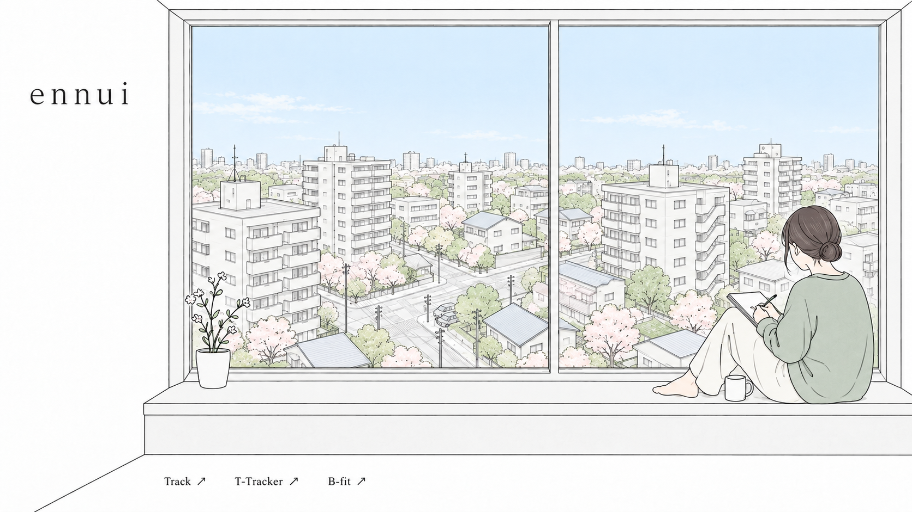

<!doctype html>
<html lang="ja">
<meta charset="utf-8"><meta name="viewport" content="width=device-width,initial-scale=1">
<title>ennui — Scene study</title>
<style>
*{box-sizing:border-box}body{margin:0;background:#f6f7f7;color:#303638;font-family:system-ui,sans-serif;letter-spacing:0}main{min-height:100svh;display:flex;flex-direction:column;justify-content:center}.viewport{width:100%;overflow:hidden}.scene{position:relative;width:100%;aspect-ratio:1672/941;isolation:isolate;background:white}.scene img{width:100%;height:100%;display:block;transition:filter 1.8s}.scene canvas,.light{position:absolute;inset:0;width:100%;height:100%;pointer-events:none}.light{background:#f6b07a;mix-blend-mode:multiply;opacity:0;transition:opacity 1.8s}.scene[data-mode=rain] img{filter:saturate(.52) brightness(.83)}.scene[data-mode=evening] img{filter:saturate(.85) brightness(.92)}.scene[data-mode=evening] .light{opacity:.3}footer{display:flex;justify-content:center;align-items:center;gap:24px;flex-wrap:wrap;padding:20px 16px;border-top:1px solid #dfe3e2;background:#fff}fieldset{border:0;padding:0;margin:0;display:flex;gap:4px}legend{position:absolute;width:1px;height:1px;overflow:hidden;clip-path:inset(50%)}label.mode{cursor:pointer;padding:9px 14px;font-size:13px;border-bottom:2px solid transparent}label.mode:has(input:checked){border-color:#51766d;color:#244d43;background:#edf4f0}input[type=radio]{position:absolute;opacity:0}label.mode:has(input:focus-visible){outline:2px solid #51766d}label.level{font-size:12px;display:flex;align-items:center;gap:10px}input[type=range]{width:100px;accent-color:#51766d}button{border:1px solid #d1d9d5;background:white;color:#303638;width:36px;height:36px;border-radius:4px;font-size:17px;cursor:pointer}button:focus-visible{outline:2px solid #51766d}.status{font-size:11px;color:#687772;min-width:72px} @media(max-width:600px){.scene{width:180%;margin-left:-60%}footer{gap:14px;padding:16px 8px}label.mode{padding:9px 11px}main{justify-content:center}}@media(prefers-reduced-motion:reduce){.scene img,.light{transition:none}}
@media(max-width:600px){.scene{margin-left:-80%}}
</style>
<main>
<div class="viewport"><div class="scene" data-mode="sunny"><div class="light"></div><canvas aria-hidden="true"></canvas></div></div>
<footer aria-label="シーン設定">
<fieldset><legend>天気と時間</legend><label class="mode"><input type="radio" name="mode" value="sunny" checked>晴れ</label><label class="mode"><input type="radio" name="mode" value="rain">雨</label><label class="mode"><input type="radio" name="mode" value="evening">夕方</label><label class="mode"><input type="radio" name="mode" value="wind">風</label></fieldset>
<label class="level">強さ<input type="range" min="0" max="100" value="45" aria-label="演出の強さ"></label>
<button id="pause" title="動きを一時停止" aria-label="動きを一時停止">Ⅱ</button><span class="status">春 · 14:00</span>
</footer></main>
<script>
const scene=document.querySelector('.scene'),canvas=document.querySelector('canvas'),ctx=canvas.getContext('2d'),slider=document.querySelector('[type=range]'),pause=document.querySelector('#pause'),status=document.querySelector('.status');
const reduced=matchMedia('(prefers-reduced-motion: reduce)');let stopped=reduced.matches,mode='sunny',strength=.45,last=0,elapsed=0,raf=0;
const particles=Array.from({length:180},()=>({x:Math.random()*1672,y:Math.random()*941,z:.3+Math.random()*.7,phase:Math.random()*6.28}));
// Clip effects to the glazing, subtracting a conservative foreground silhouette.
function outdoor(){ctx.beginPath();ctx.rect(351,49,655,629);ctx.rect(1026,49,583,629);ctx.moveTo(1180,678);ctx.lineTo(1225,616);ctx.lineTo(1308,544);ctx.lineTo(1340,516);ctx.lineTo(1420,525);ctx.lineTo(1420,470);ctx.lineTo(1428,390);ctx.lineTo(1470,366);ctx.lineTo(1530,373);ctx.lineTo(1555,407);ctx.lineTo(1560,472);ctx.lineTo(1609,504);ctx.lineTo(1609,678);ctx.closePath();ctx.moveTo(351,500);ctx.lineTo(407,493);ctx.lineTo(464,545);ctx.lineTo(469,620);ctx.lineTo(421,678);ctx.lineTo(351,678);ctx.closePath();ctx.clip('evenodd')}
function resize(){const d=Math.min(devicePixelRatio||1,1.5),r=scene.getBoundingClientRect();canvas.width=Math.round(r.width*d);canvas.height=Math.round(r.height*d);draw(0)}
function draw(dt){ctx.setTransform(canvas.width/1672,0,0,canvas.height/941,0,0);ctx.clearRect(0,0,1672,941);ctx.save();outdoor();if(mode==='rain'){ctx.fillStyle='rgba(121,146,162,.17)';ctx.fillRect(0,0,1672,941)}const rain=mode==='rain',wind=mode==='wind',count=rain?Math.round(45+strength*135):wind?Math.round(10+strength*24):6;
for(let i=0;i<count;i++){const p=particles[i],speed=rain?360+strength*550:wind?55+strength*160:14; p.x+=dt*(rain?-speed*.21:speed)*p.z;p.y+=dt*(rain?speed:12+Math.sin(elapsed+p.phase)*10)*p.z;if(p.x>1685)p.x=-15;if(p.x< -20)p.x=1690;if(p.y>950)p.y=-20;ctx.globalAlpha=rain?.15+p.z*.25:.25+p.z*.35;ctx.strokeStyle='#748a9b';ctx.fillStyle=mode==='evening'?'#e9bdab':'#dca9b9';ctx.lineWidth=rain?1.1:1;ctx.beginPath();if(rain){ctx.moveTo(p.x,p.y);ctx.lineTo(p.x-5*p.z,p.y+(13+strength*14)*p.z);ctx.stroke()}else{ctx.ellipse(p.x,p.y,3.5*p.z,1.8*p.z,elapsed+p.phase,0,Math.PI*2);ctx.fill()}}
ctx.restore();ctx.globalAlpha=1}
function frame(t){raf=0;const dt=last?Math.min((t-last)/1000,.05):0;last=t;elapsed+=dt;draw(dt);if(!stopped&&!document.hidden)raf=requestAnimationFrame(frame)}
function schedule(){if(raf)cancelAnimationFrame(raf);raf=0;last=0;if(!stopped&&!document.hidden)raf=requestAnimationFrame(frame);else draw(0)}
function syncPause(){pause.textContent=stopped?'▶':'Ⅱ';pause.title=pause.ariaLabel=stopped?'動きを再開':'動きを一時停止';pause.setAttribute('aria-pressed',String(stopped))}
document.querySelectorAll('[name=mode]').forEach(input=>input.addEventListener('change',()=>{mode=input.value;scene.dataset.mode=mode;status.textContent=mode==='evening'?'春 · 17:30':'春 · 14:00';draw(0)}));slider.addEventListener('input',()=>{strength=Number(slider.value)/100;draw(0)});pause.addEventListener('click',()=>{stopped=!stopped;syncPause();schedule()});reduced.addEventListener('change',e=>{stopped=e.matches;syncPause();schedule()});document.addEventListener('visibilitychange',schedule);new ResizeObserver(resize).observe(scene);syncPause();schedule();
</script>
</html>
